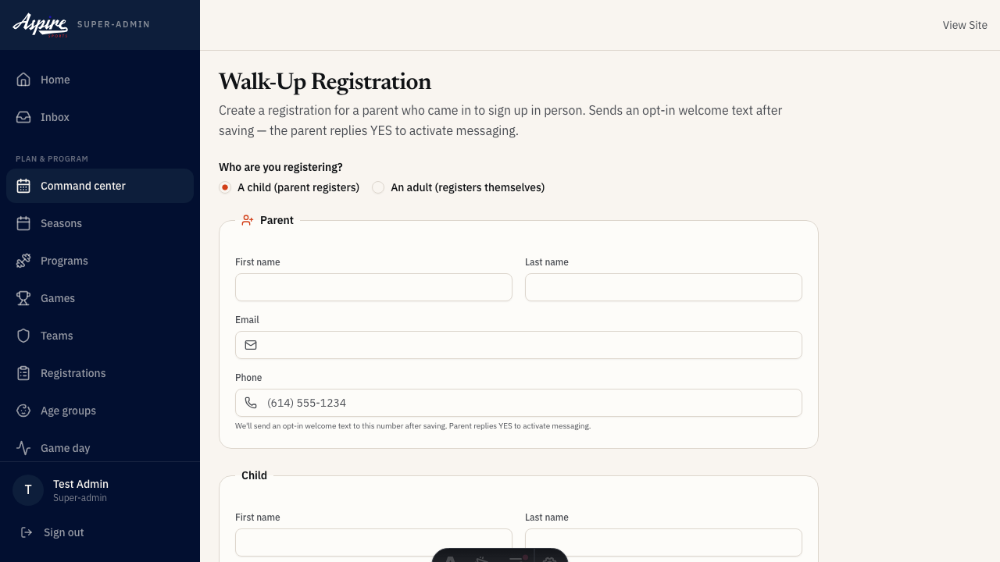

Owns check-in, Parent comms, walk-on registrations, and concessions during an
event-day.
Why this role matters
You are the first hello and the last impression. Registration, concessions, lost-and-found — families judge the whole organization by how you treat them.
What we believe
These four beliefs shape every practice plan, every sideline conversation, and every call we make about a kid.
Development Over Winning
We measure success by effort, improvement, and enjoyment — not the scoreboard. Winning takes care of itself when kids develop the right way.
Every Child Can Improve
There's no such thing as a "non-athletic" kid. With the right environment and encouragement, every child can grow their abilities — talent is built, not discovered.
What we believe (continued)
Long-Term Athlete Development
We're building athletes for age 25, not just age 8. We never trade away a child's long-term growth for a short-term result.
Holistic Growth
Sport develops the whole child — skills, game understanding, fitness, and confidence together. We pay attention to all of it, not just the physical side.
How that shows up day to day
We coach to two goals at once: compete to win, and grow every player's character and competence. When those two pull in different directions, character comes first.
Day to day, that means we praise effort, learning, and bouncing back from mistakes — the things a kid actually controls — over results they can't always control.
Whatever your role, this is what families should feel from us.
Your day: day setup
Concession inventory count (open) — You own this
Concession setup — You own this
Concession inventory count (open)
You own this
When: After concession setup, before first sale
If something goes wrong: If Front of House unreachable, escalate to Venue Manager per the standard handoff ladder.
Do this right after concession setup finishes and before the stand
opens for its first sale — counting after sales have started
makes the numbers useless for reconciliation.
Count drinks by type and size, working from the front cooler back
to the stockroom so nothing gets double-counted.
Count snacks and packaged goods by SKU.
Count hot-food pars — the prepped starting quantity for items made
in batches (hot dogs, pretzels), not raw ingredient stock.
Count paper goods and consumables that affect per-unit cost
tracking: cups, napkins, condiment packets.
Enter every count into the inventory form by item — don't batch
categories together, since end-of-day reconciliation matches this
count line-by-line against the closing count.
Note anything already damaged, short-dated, or missing from the
expected opening stock before the first sale, and flag it to the
venue manager if it looks like a shrink or delivery problem.
Submit the form. This is what the cash and concession reconcile
compares against at the end of the day.
Concession setup
You own this
When: About 90 minutes before first kickoff (concessions venues only)
There's a checklist for this — see the checklist slides.
If something goes wrong: If Front of House unreachable, escalate to Venue Manager per the standard handoff ladder.
About 90 minutes before first kickoff, power on all concession
registers — and give it time to reach operating temperature before
you need it.
Restock the front cooler and display cases from the back cooler so
the stand looks fully stocked when families arrive.
Set up the POS terminal: confirm it's connected, logged in under
today's shift, and the opening cash bank (the fixed starting
drawer amount) is in the drawer and matches the expected amount.
Calibrate fountain syrup-to-water ratios and taste-test each flavor
before opening — a flat or over-syrupy fountain is the most common
concession complaint.
Confirm hand-wash stations are stocked with soap and paper towels,
and sanitizer stations/wipes are stocked at the register and food
prep area.
Check food safety basics: cold items are cold, hot items are hot,
and any date-sensitive stock (dairy, prepped items) is within
date.
Do a final walk of the stand for anything blocking service — boxes
in the walkway, signage not yet up, menu board not updated for
today's pricing.
Once the stand is fully ready, mark the checklist complete — this
clears the way for the concession inventory count.
Your day: pre game
Walk-on registration — You own this
Walk-on registration
You own this
When: Throughout the drop-in/clinic intake window
If something goes wrong: If Front of House unreachable, escalate to Event Lead per the standard handoff ladder.
Throughout the drop-in/clinic intake window, greet each walk-on
parent or adult player at the front-of-house station — the coach
running the session isn't the one who registers walk-ons.
Open walk-up registration and collect the player/adult info: name,
date of birth (youth) or the adult registrant's own info, and an
emergency contact and phone number.
Note any medical or allergy information the coach should know
before the player joins the session.
Select the correct session/program the walk-on is joining so
they're added to the right roster, not just "today's activity."
Capture payment before the player joins play — record the payment
status and method; if paying at the desk in person, mark it paid
once the payment is actually taken.
Get the liability waiver signed. In person, that's the paper
waiver at the desk; note it as signed once collected — never let a
player join on a verbal "I'll sign later."
Add the player to the session roster so the coach's headcount and
ratio check reflects them before they join.
Once registration, payment, and waiver are all complete, the
walk-on counter increments automatically — confirm the player is
on the roster the coach sees before sending them to the field.
If intake volume would push a session over its coach ratio cap,
tell the coach to close intake for that session and hold
additional walk-ons for the next available slot.

Your day: in game
Spectator management — You own this
Spectator management
You own this
When: Spectator complaint or sideline issue raised during a match
If something goes wrong: If issue exceeds Front of House scope, escalate to Event Lead; any safety-relevant escalation goes to Venue Manager.
When a spectator complaint or sideline issue is raised — a seating
conflict, a lost parent, a behavior concern — respond in person
rather than trying to resolve it by shouting across the sideline.
Get the reporting spectator's account first, without interrupting
the match in progress unless the issue is safety-relevant.
For seat conflicts or general confusion (wrong bleacher section,
can't find their kid's field), resolve on the spot — this doesn't
need the form unless it escalates.
For behavior issues (a heated spectator, unsporting conduct from
the sideline, a dispute between parents), speak with the person
directly, calmly, and away from the match.
If the person won't de-escalate or the issue is safety-relevant
(physical altercation, threats), pull in the event lead
immediately rather than continuing to handle it alone.
Any safety-relevant issue also goes to the venue manager right
away, in parallel with pulling in the event lead — don't wait for
one before notifying the other.
Log the complaint details in the form regardless of outcome: what
happened, who was involved, how it was resolved. Even minor,
fully-resolved issues get logged — this is what surfaces repeat
problem patterns over time.
Submit the form within about 5 minutes of the issue arising, while
the details are still fresh.
Your day: end of day
Cash and concession reconcile — You own this
Lost and found inventory — You own this
Cash and concession reconcile
You own this
When: After concession close, before deposit
If something goes wrong: If Front of House unreachable, Venue Manager performs the reconciliation; any cash variance over threshold escalates to Director.
Close the concession stand to new sales before starting the count —
don't count a drawer that's still taking cash.
Count the drawer cash by denomination with a second person present
as witness; the witness watches the count, they don't just take
your word for the total.
Subtract the opening bank (the fixed starting cash noted at
concession setup) from the counted total to get cash sales.
Run the POS Z-report for the day and record card sales and total
POS-recorded sales separately from the cash count.
Count closing concession inventory against the opening inventory
count to compute units sold by item.
Multiply units sold by price to get expected revenue, then compare
expected revenue to (cash sales + card sales) and record the
variance, over or short.
If the variance is inside the normal tolerance, both you and the
witness sign the reconciliation form and prepare the deposit.
If the variance is outside tolerance, recount before assuming
shrink or a counting error — then record the variance as-is and
escalate to the venue manager; anything still unexplained after
recount escalates to the director.
File the signed, witnessed form with today's records before making
the deposit.
Lost and found inventory
You own this
When: At end of day after the venue clears
If something goes wrong: If Front of House unreachable, Event Lead inventories and escalates to Venue Manager per the standard handoff ladder.
After the venue clears at end of day, do one final sweep of common
areas — bleachers, sidelines, locker rooms, restrooms, concession
seating — for anything left behind, in addition to whatever's
already in the lost-and-found bin.
For each item, log a description specific enough to identify it
(color, brand, size) — "water bottle" isn't enough on a day with
six lost water bottles.
Log where it was found (field/court, bleachers, restroom, parking
lot) so a family calling in has a starting point.
If a name, phone number, or team is visible on the item itself,
log that contact info directly against the entry.
If someone already reported the item missing today and you can
match it, note the match and reach out with the contact info you
have rather than waiting for them to call the office.
Store the physical items together in the lost-and-found holding
area, not scattered across storage.
Submit the inventory form — this is what the office uses to match
items to inquiries and to know what's still eligible for the
holding-window disposal.
If front of house isn't available to run this at close, the event
lead does the inventory and escalates per the escalation path.
Checklist: chk.concession_setup
Fountain machine, warmers, and hot-food equipment powered on and at operating temp
Front cooler / display cases restocked from the back cooler
POS terminal connected, logged in, and opening cash bank confirmed
Fountain syrup ratios calibrated and taste-tested per flavor
Hand-wash and sanitizer stations stocked
Cold items cold, hot items hot, date-sensitive stock within date
Stand walkway clear, signage up, menu board updated for today's pricing
Safety & escalation
If Front of House unreachable, Event Lead inventories and escalates to Venue Manager per the standard handoff ladder.
If Front of House unreachable, Venue Manager performs the reconciliation; any cash variance over threshold escalates to Director.
If Front of House unreachable, escalate to Event Lead per the standard handoff ladder.
If Front of House unreachable, escalate to Venue Manager per the standard handoff ladder.
If issue exceeds Front of House scope, escalate to Event Lead; any safety-relevant escalation goes to Venue Manager.
You may need to escalate to: Director, Event Lead, Front of House, Venue Manager
Your tools
/admin/check-in
Player/family check-in
/admin/venue/walk-up
Walk-on registration and payment
Where to get help
Check this deck's Safety & escalation slide for your activity's specific chain.
Escalate per that chain first — most issues have a named next step.
Director is the final escalation tier for anything unresolved.